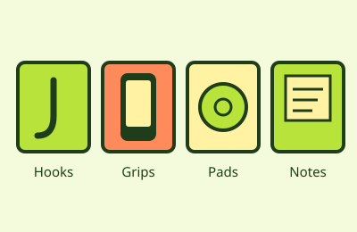

Removable Wall Hooks
Hang keys, posters, and towels, then peel them off without paint damage.

We keep our inventory small on purpose, so every item is one we trust.
Not sure which one you need? Type a word below and the list will narrow as you type.
Showing all 4 products.
Hang keys, posters, and towels, then peel them off without paint damage.
A tacky gel pad that holds your phone to a desk, dashboard, or mirror.
Rinse them under water and they grip again, just like a gecko toe.
Bright pads in lime, yellow, and orange for lists and reminders.